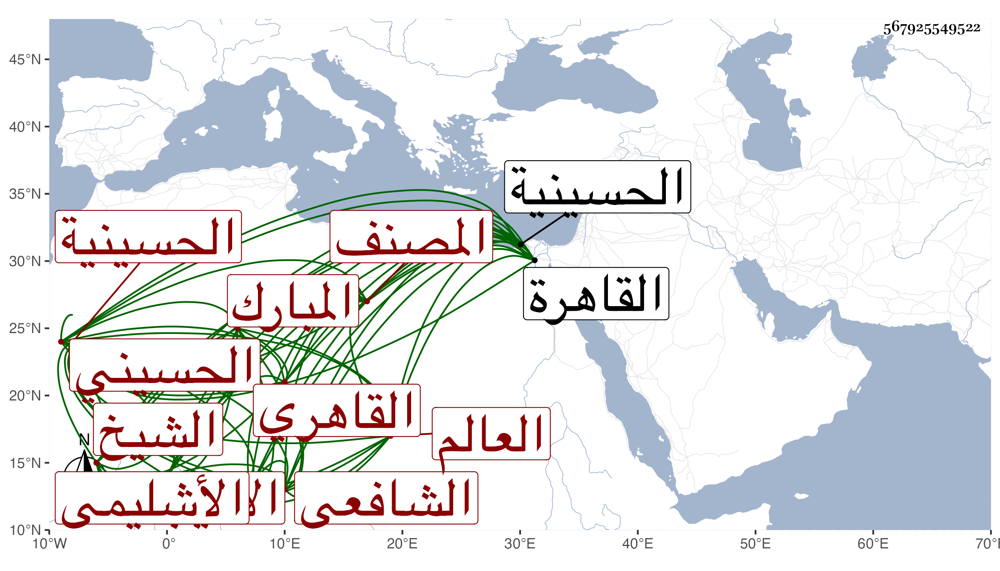

0902Sakhawi.DawLamic.ITO20230111-ara1.EIS1600.567925549522
Biography ID: 567925549522
343
أحمد بن محمد بن صالح بن عثمان بن محمد بن محمد الشهاب أبو الثناء بن الشمس بن الصلاح بن الفخر بن النجم بن المحيوي الأشليمي ثم الحسيني القاهري الشافعي نزيل البرقوقية ويعرف بابن صالح ويقال له أيضا سبط السعودي يعني الشيخ العالم المبارك الأديب المصنف الشمس السعودي ولكن شهرته بابن صالح أكثر لأن جده كان كما قدمت يلقب صلاح الدين فغلب عليه الصلاح بغير إضافة وربما قيل له صلاح فظن أنه اسمه وكان آخر أجداده محيي الدين قاضي الدمار وجده الصلاح ذا أموال عظيمة ومكارم عميمة واتصال بالأكابر ويحكي أنه مر به بعض مشايخ العرب فأضافه فقال إنه لم ير أكرم من ثلاثة كلهم فقهاء والصلاح أكرمهم . ولد في العشر الأول من ربيع الأول سنة عشرين وثمانمائة بالحسينية ونشأ بها فحفظ القرآن وصلى به والعمدة والمنهاج وجمع الجوامع والفية ابن مالك ومقدمة الحناوي والتلخيص ، وعرض على شيخنا والمحب بن نصر الله والمجد البرماوي وأجازوه وغيرهم ، وأخذ عن القاياتي الفقه والأصلين والصرف وغيرها والفقه وأصوله عن الونائي وأصول الدين عن الشمني والعربية عن الحناوي والفقه أيضا عن الفقيه النسابة ولازم العز عبد السلام البغدادي والعضد الصيرامي شيخ البرقوقية في المعاني والبيان والصرف وغيرها وأبا القسم النويري في المنطق والعروض وأخذ شرح النخبة وغيره عن شيخنا ، ثم كان بعد ممن جفاه مع أنه كان يقول كنت أجيئه وأنا في غاية الانحراف منه فما أفارقه إلا وقد امتلأ قلبي له حبا بخلاف غيره فإنن كنت آتيه وأنا ممتلئ القلب من حبه فبمجرد أن يقع بصري عليه ويناولي يده يذهب ذلك رحمهم الله ، وبرع في فنون وأقبل على فن الأدب ففاق فيه وطارح الأدباء وقال النظم الرائق الممكن القوافي المنسجم الألفاظ والمعاني والنثر الفائق ونظم عقائد النسفي التي شرحها التفتازاني في قصيدة من بحر البسيط روية اللام ألف بغير حشو ، وكان هو والشهاب بن أبي السعود مع ما بينهما من التباين كفرسي رهان وامتدح الأعيان كشيخنا والبهاء بن حجي والزين عبد الباسط والكمال بن البارزي وارتبط بفنائه واختص به وقتا وحج صحبته ، وولي تدريس الفقه بالأشرفية القديمة والحديث ببعض المساجد والخطابة بالمنجكية وغير ذلك وأقبل بأخرة على إقراء التلخيص وغيره وأعرض عن الانتساب إلى الشعر ، وكان غاية في الذكاء أعجوبة في سرعة الإدراك والنادرة ذاكرا لمحفوظاته إلى آخر وقت مع حسن المحاضرة ولطف النسمة وظرف البزة وقلة الخوض فيما لا يعنيه ولم يكن عند العز الحنبلي في معناه مثله حتى إنه كان يكثر التأسف على فقده وسمعت بعض من يعاني الشعر من مخالطيه يقول إنه كان أرق نظما من شعراء عصره وكذا كان الشرف بن العطار الذي لمزيد اختصاصه مال معه عن جانب شيخنا ينوه به جدا ويطريه بحيث يرجحه على ابن نباتة وقد كتب عنه غير واحد من أصحابنا واعتنى النجم بن حجي بجمع نظمه ونثره فوقع له من ذلك الكثير وكنت ممن كتب عنه جملة كما أثبت شيئا منها في معجمي والجواهر بل قرض لي بعض تآليفي فأحسن ومن ذلك قوله فكانني عنيته بقولي في شيخ شيخ الحديث قديما إذ نثرت عليه عقد مدحي نظيما :
| وقد حفظ الله الحديث بحفظه | فلا ضائع إلا شذى منه طيب |
| وما زال يملا الطرس من بحر صدره | لآلئ إذ يملي علينا ونكتب |
مات بالقاهرة في يوم الاثنين عاشر شعبان سنة ثلاث وستين بقبة البرقوقية ودفن بباب النصر وتأسفنا على فقده رحمه الله وعفا عنه وإيانا .
